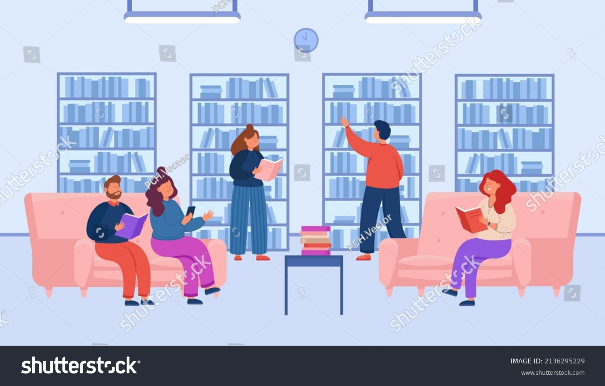

{% load static %}
<!DOCTYPE html>
<html lang="en">
<head>
    <meta charset="UTF-8">
    <meta name="viewport" content="width=device-width, initial-scale=1.0">
    <title>User Dashboard</title>
    <link rel="stylesheet" href="../static/style.css">

    <style>
        body {
            color:whitesmoke;
        }
        #left-section {
            width: 20%; /* Adjust the width as per your design */
            background-color:black; /* Set background color */
            float: left; /* Float the left section to the left */
            height: 100vh; /* Make the left section full height */
            padding: 20px;
        }

        #main-content {
            background-color:black;
            height: 100vh;  /* Adjust the height as needed */
        }
       
    </style>
</head>
<body>
    {% csrf_token %}
    <nav>
        <ul>
            <li><a href="{% url 'home' %}">Home</a></li>
            <li><a href="{% url 'student_login' %}">Login</a></li>
        </ul>
    </nav> 

    <div id="left-section">
        <!-- Content for the left section goes here -->
        <h2>Left Section</h2>
        <p>This is the left side content.</p>
        <li><a href="{% url 'student_dashboard' %}">Student Dashboard</a></li>
        <li><a href="{% url 'borrow' %}">Borrow</a></li>
        
    </div>

    <div id="main-content">
        <!--  -->
    </div>
    
    <p>
        
    </p>
    <script>
        // Function to handle link clicks and load content into specified target element
        function handleLinkClicks(selector, targetElement) {
            document.querySelectorAll(selector + ' a').forEach(link => {
                link.addEventListener('click', function(event) {
                    event.preventDefault();
                    // Load content into the specified target element
                    loadSectionContent(this.getAttribute('href'), targetElement);
                });
            });
        }

        // Load content into the main section when left section links are clicked
        handleLinkClicks('#left-section', '#main-content');

        // Load content into the main section when links within the main section are clicked
        handleLinkClicks('#main-content', '#main-content');

        // Function to load section content into specified target element
        function loadSectionContent(url, targetElement) {
            fetch(url)
                .then(response => response.text())
                .then(content => {
                    let sectionContent = document.querySelector(targetElement);
                    if (sectionContent) {
                        sectionContent.innerHTML = content;
                
                        // Add the current URL to the browser's history
                        history.pushState({ content }, null, url);
                    } else {
                        console.error(`Element with selector "${targetElement}" not found.`);
                    }
                })
                .catch(error => console.error('Error loading section content:', error));
        }

        // Event listener for the popstate event, triggered by browser back/forward buttons
        window.addEventListener('popstate', function(event) {
            if (event.state && event.state.content) {
                // Restore the content when the user navigates back
                document.querySelector('#main-content').innerHTML = event.state.content;
            }
        });


        

        
    </script>
</body>
</html>